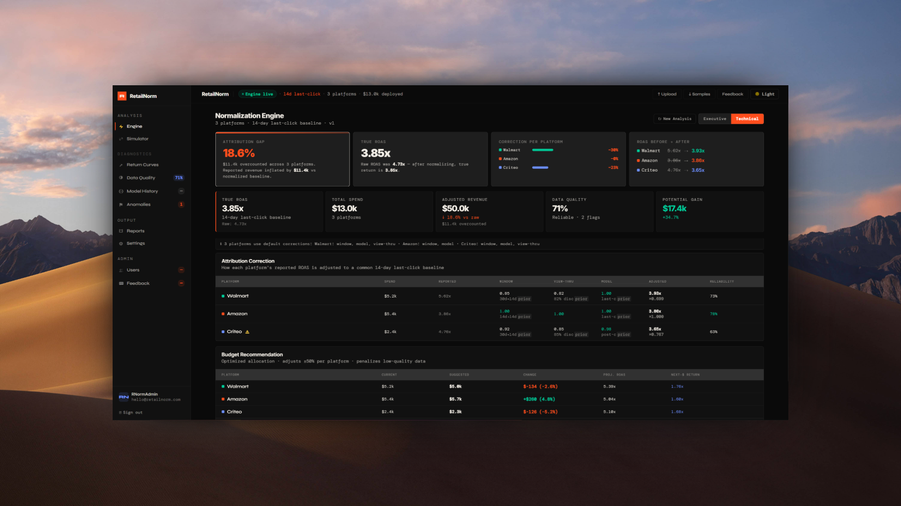
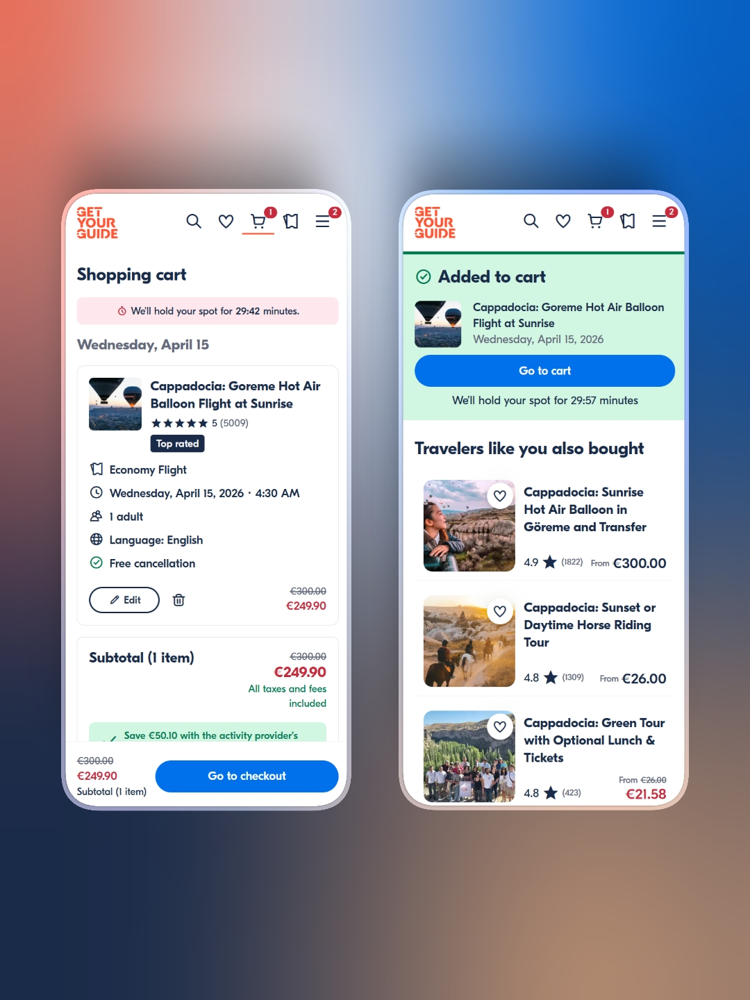
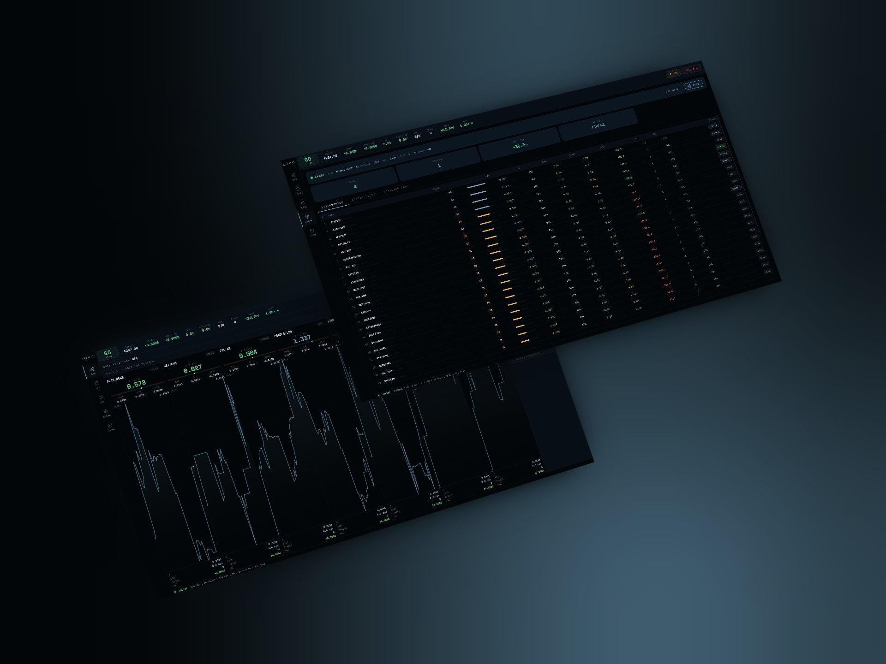
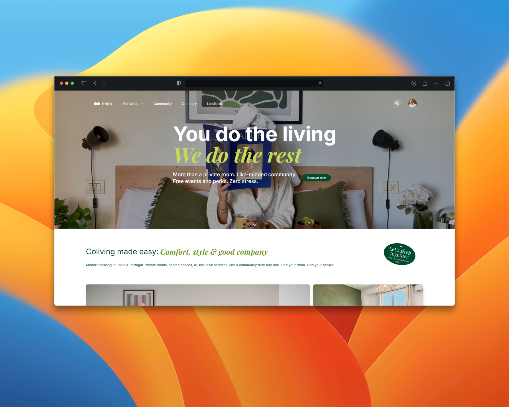

Product Design + Systems Thinking
I design systems that make
complexity usable.
Inigo Angulo.
I turn ambiguous, data-heavy problems into clear, useful products with commercial value. My work spans commerce intelligence, conversion systems, and trading interfaces.
I use AI to move faster, but the real edge is judgment. Knowing what matters, what to simplify, and what to ship.
Trusted by teams at
// approach
I design backwards.
From the decision the business needs,
back to the screen that produces it.
Everything that doesn't serve that decision gets removed.

RetailNorm
Agencies were moving six-figure budgets using data they knew was incomparable. Nobody fixed it because the problem sits between platforms, not inside them. I designed the system that made the data trustworthy. 40x faster. Live.

Checkout Funnel Redesign
The team was optimizing the wrong step. 38% of converters left checkout and came back with no re-entry experience. The problem wasn't payment. It was the gap nobody measured. +11 pts, 4 EU markets.

KŌDO Arbitrage
My own money. 24/7 autonomous execution. v1 had 23 metrics and I couldn't decide in under 30 minutes. That's a design failure with financial consequences. v2 answers one question. Running live.

ENSO Co-Living
The brief was wrong. Operator shadowing revealed the product wasn't 47 spreadsheets, it was 3 daily decisions. Killed 60% of planned scope. -22% friction, 4x adoption.
Think
Systems before screens. I map the decision architecture, the service blueprint, the information flow. By the time anything reaches engineering, the hard questions are answered.
Prove
I instrument my own work. I read session recordings before the standup. The problems I find never become tickets because nobody else looks at the data at this resolution.
Ship
AI compressed the distance between design and deployed product. Validated concept to shipped experience in weeks, not months.
PDF, Updated March 2026
Let's talk about your system.
I work on complex product problems where design directly impacts revenue, decision quality, or operational efficiency. Commerce, fintech, data-heavy systems.
Based in Zurich. Remote or hybrid.
// reach out
Case Studies
Each one follows the same structure: what was broken, what I found, what I shipped, and what the data said afterward.
RetailNorm
Budget decisions worth six figures on data that can't be compared. Designed the system that fixed it. End-to-end, concept to shipped.
Checkout Funnel Redesign
The real drop-off was where nobody measured. Found it, fixed it. +11% completion, est. seven-figure revenue impact.
KŌDO Arbitrage
The only project where a design failure costs me real money. 23 metrics became 1 question. Live, 24/7.
ENSO Co-Living
Killed the brief. The product was the decisions, not the spreadsheets. -22% friction, 4x adoption.
How I work
From ambiguity
to measurable outcome.
Every engagement follows this arc. The order matters—each phase feeds the next.
Listen
Before I design anything, I watch. Session recordings, operator shadowing, funnel data. The real problem is almost never what the brief says.
Frame
I redefine the problem as a decision. What does this system need to produce? Who acts on it? Every feature either serves that decision or gets cut.
Build
Systems before screens. IA, component systems, and decision flows before high-fidelity work. Prototypes go in front of users early.
Prove
I instrument my own work. Every design ships with its measurement plan. I read session recordings before standups and run A/B experiments across markets.
Ship & iterate
AI compressed the distance between validated design and shipped product. Post-launch data feeds back into the next cycle.

Inigo Angulo
I’m a product designer based in Zurich with 10+ years of experience across commerce, fintech, PropTech, and travel.
I work on complex, data-rich products where clarity, speed, and business impact matter. My focus is turning messy systems into experiences that are easier to use, easier to trust, and better aligned with how people actually make decisions.
Currently, I’m Experience Lead for Commerce at WPP, shaping end-to-end UX across AI-enabled platforms. Previously, I led conversion optimisation at GetYourGuide, designed luxury trading platforms at Crowdhouse AG, and contributed to a multi-country design system at ING Bank.
My work sits between product strategy, behavioural analytics, and experience design. I use tools like PostHog, GA4, and Mixpanel not just to validate decisions, but to uncover friction, blind spots, and patterns that usually go unnoticed.
Outside of work, I’m deeply drawn to European medieval history, especially the symbolic weight, visual language, and cultural continuity of the period. I have a particular fascination with Gothic typography and the way form can carry identity, authority, and atmosphere across centuries.
Art keeps my sense of composition and balance alive. Photography helps me slow down and notice what most people miss. Hiking through Swiss trails is how I reset, think clearly, and usually where new ideas begin to take shape.
rest here